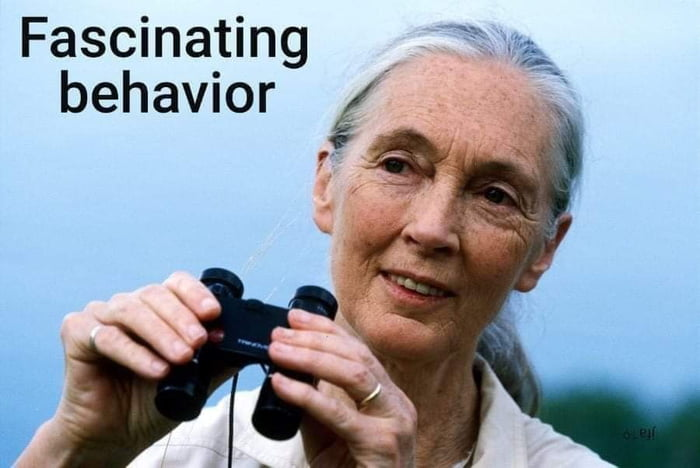

Goodall in Tanzania in 2018
Here is a timeline of Jane Goodall´s activism:
- Goodall credits the 1986 Understanding Chimpanzees conference, hosted by the Chicago Academy of Sciences, with shifting her focus from observation of chimpanzees to a broader and more intense concern with animal-human conservation. She is the former president of Advocates for Animals,[40] an organisation based in Edinburgh, Scotland, that campaigns against the use of animals in medical research, zoos, farming and sport.
- Goodall is a vegetarian and advocates the diet for ethical, environmental, and health reasons. In The Inner World of Farm Animals, Goodall writes that farm animals are "far more aware and intelligent than we ever imagined and, despite having been bred as domestic slaves, they are individual beings in their own right. As such, they deserve our respect. And our help. Who will plead for them if we are silent?" Goodall has also said: "Thousands of people who say they 'love' animals sit down once or twice a day to enjoy the flesh of creatures who have been treated so with little respect and kindness just to make more meat."
- Goodall is an outspoken environmental advocate, speaking on the effects of climate change on endangered species such as chimpanzees. Goodall, alongside her foundation, collaborated with NASA to use satellite imagery from the Landsat series to remedy the effects of deforestation on chimpanzees and local communities in Western Africa by offering the villagers information on how to reduce activity and preserve their environment.
- In 2000, to ensure the safe and ethical treatment of animals during ethological studies, Goodall, alongside Professor Mark Bekoff, founded the organization Ethologists for the Ethical Treatment of Animals.
- In April 2008, Goodall gave a lecture entitled "Reason for Hope" at the University of San Diego's Joan B. Kroc Institute for Peace & Justice Distinguished Lecture Series.
- In 2008, Goodall demanded the European Union end the use of medical research on animals and ensure more funding for alternative methods of medical research.
- In May 2008, Goodall controversially described Edinburgh Zoo's new primate enclosure as a "wonderful facility" where monkeys "are probably better off [than those] living in the wild in an area like Budongo, where one in six gets caught in a wire snare, and countries like Congo, where chimpanzees, monkeys and gorillas are shot for food commercially. "This was in conflict with Advocates for Animals' position on captive animals. In June 2008, Goodall confirmed that she had resigned the presidency of the organisation which she had held since 1998, citing her busy schedule and explaining, "I just don't have time for them."
- Goodall is a patron of population concern charity Population Matters and is currently an ambassador for Disneynature.
- In 2010, Goodall, through JGI, formed a coalition with a number of organizations such as the Wildlife Conservation Society (WCS) and the Humane Society of the United States (HSUS) and petitioned to list all chimpanzees, including those that are captive, as endangered. In 2015, the U.S. Fish and Wildlife Service(FWS) announced that they would accept this rule and that all chimpanzees would be classified as endangered.
- In 2011, Goodall became a patron of Australian animal protection group Voiceless, the animal protection institute. "I have for decades been concerned about factory farming, in part because of the tremendous harm inflicted on the environment, but also because of the shocking ongoing cruelty perpetuated on millions of sentient beings."
- In 2012, Goodall took on the role of challenger for the Engage in Conservation Challenge with the DO School, formerly known as the D&F Academy. She worked with a group of aspiring social entrepreneurs to create a workshop to engage young people in conserving biodiversity, and to tackle a perceived global lack of awareness of the issue.
- In 2014, Goodall wrote to Air France executives, criticizing the airline's continued transport of monkeys to laboratories. Goodall called the practice "cruel" and "traumatic" for the monkeys involved. The same year, Goodall also wrote to the National Institutes of Health (NIH) to criticize maternal deprivation experiments on baby monkeys in NIH laboratories.
- Prior to the 2015 UK general election, she was one of several celebrities who endorsed the parliamentary candidacy of the Green Party's Caroline Lucas.
- Goodall is a critic of fox hunting and was among more than 20 high-profile people who signed a letter to Members of Parliament in 2015 opposing Conservative prime minister David Cameron's plan to amend the Hunting Act 2004.
- During August 2019, Goodall was honoured for her contributions to science with a bronze sculpture in midtown Manhattan alongside nine other women, part of the "Statues for Equality" project.
- In 2020, continuing her organization's work on the environment, Goodall vowed to plant 5 million trees, part of the 1 trillion tree initiative founded by the World Economic Forum.
If you want to know more about this incredible lady, check out her Wikipedia entry.